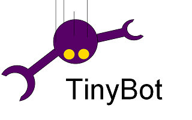
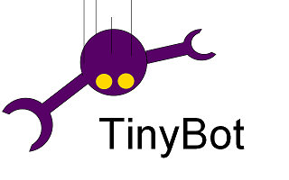
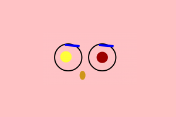
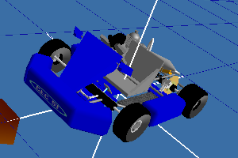

Projets personnels
-
<<<<<<< HEAD
 >>>>>> 72886a67d12a3eb2bf5f200a539c8940b2ba3e45
alt="">
>>>>>> 72886a67d12a3eb2bf5f200a539c8940b2ba3e45
alt="">
TinyBot
C++ / Python 2012
tinybot est un simulateur de robot en 2 dimensions.
Il permet de tester des algorithmes en simulant des créatures à l'aide d'un moteur physique en 2D. Ce moteur physique est Box2D. tinybot est écrit en python, un autre logiciel a été écrit pour utiliser Box2D en python pwbox2d (à l'aide de boost pyhon). -

RemoteFace
Java / Python 2012RemoteFace une application Android qui permet de déssiner des formes 2D simple (tel qu'un rectangle, un cercle ou un polygone). Ces formes peuvent ensuite être modifiés en temps réel à l'aide d'un protocole TCP (position, taille, couleur, alpha).
Le client TCP exemple est écrit en Python.
L'idée du logiciel, est d'obtenir facilement un visage pour un robot humanoîde, configurable à la demande.
-

Kartjax
C++ / QT 2010Kartjax est un projet de jeu vidéo en 3D : un jeu de Karting (comme supertuxkart).
Il est développé directement sur la couche OpenGL. L'objectif principal de ce développement est pédagogique (constuire un moteur de jeux, utiliser opengl, sérialiser en c++, revoir les arbres - octree - ...). Nous avons développé des utilitaires, en Qt, comme un éditeur d'objets (mesh) ou un éditeur d'animations (animated mesh). Les bibliothèques utilisées sont donc bas niveau : OpenGL, OpenAL, freetype.